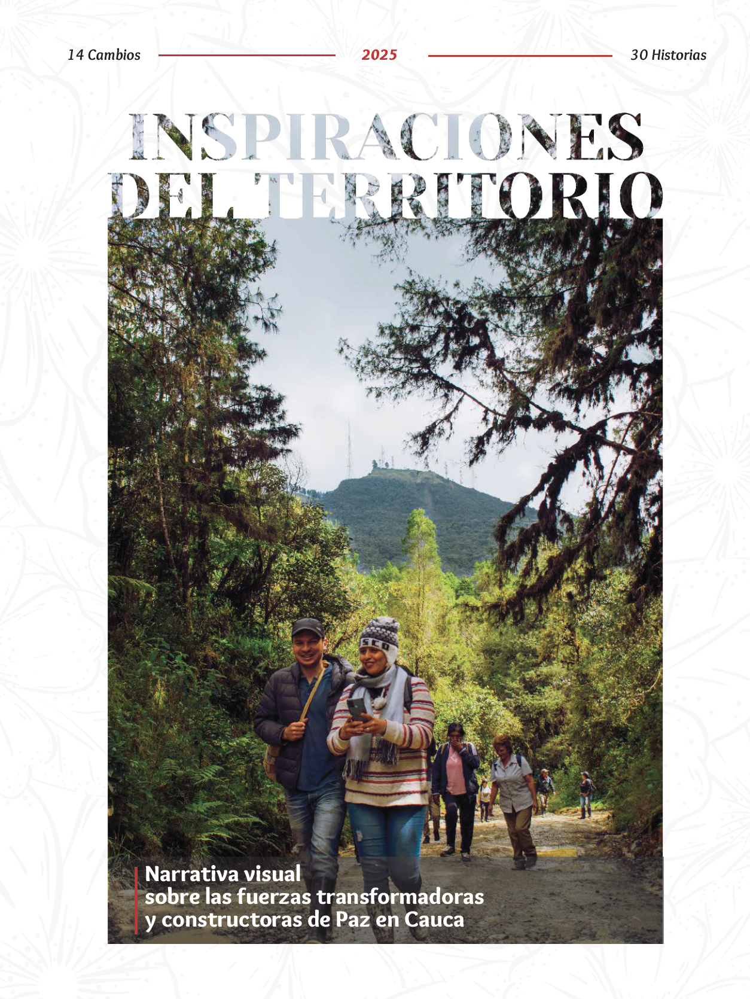

Mapeo sistémico en
El Bagre
Conversaciones, fuerzas y oportunidades para la construcción de paz cotidiana.
El ecosistema: quiénes somos
Red ECO
Red de organizaciones y personas unidas para la construcción de paz en Colombia.
SEHPAZ
Liderazgo histórico, convocatoria y legitimidad territorial en el Bajo Cauca.
Facilitación
Acompañamiento metodológico en territorio (Milton & Alejandra / CreAmos).
El Tambo y el Cauca
Un mapa sistémico no es un diagnóstico inerte. En el Cauca, permitió a la comunidad verse a sí misma y descubrir sus propios poderes.
- Nacimiento de la Fundación CreAmos
- Construcción del SOLE Lab
- Iniciativas de mujeres, agua y jóvenes financiadas

Guarda la imagen como inspiraciones_territorio.png"¿Qué fuerzas y dinámicas influyen en la construcción y el sostenimiento de la paz cotidiana en el municipio de El Bagre, Antioquia?"
Problemas de reloj y nube
Toca un sistema para ver las instrucciones del juego
"¿De qué nos damos cuenta? Si El Bagre fuera este salón, ¿qué nos enseña este ejercicio sobre los retos de intentar construir paz en el territorio?"
Enfoques de intervención
Mecánico
- • Finito, predecible y controlable.
- • Se aísla el elemento del todo (se fragmenta).
- • Modificación de una variable a la vez.
- • Buscar "la pieza rota" y repararla.
Sistémico Complejo
- • Infinito, dinámico, impredecible.
- • Análisis centrado en las interacciones y relaciones.
- • Considera efectos colaterales (interdependencia).
- • Buscar patrones y aprovechar oportunidades.
¿Reloj o Nube?
Problemas tipo Reloj
- Repartir paquetes de comida.
- Instalar paneles solares.
- Comercializar un nuevo producto.
- Llevar a cabo un proceso electoral.
Problemas tipo Nube
- Garantizar seguridad alimentaria.
- Combatir el cambio climático.
- Construir un negocio sostenible.
- Fomentar una democracia sana.
Qué implica una transformación
El sistema no se cambia desde afuera, ni se controla.
Pasamos de enfocarnos en "problemas" a entender cómo funcionan las relaciones hoy (mirada apreciativa).
Pasamos de convencer o imponer a comprender, participar, colaborar y adaptar.
No traemos "soluciones mágicas"; el cambio se concibe como un proceso dinámico y no como un resultado fijo.
Exploración de mapas
- Formemos 3 grupos de 5 personas.
- Ingresen a la plataforma escaneando el código o desde sus computadores.
- Exploren los mapas y la sección Fotovoz (15 mins).
- Formulen dos (2) preguntas concretas para Alejandra Solarte.
coinspira.estudiovastago.com
El alcance de nuestro viaje
Mapa (Presencial)
3 encuentros financiados por Red ECO para construir y finalizar el mapa sistémico físico y digital.
Oportunidades (Virtual)
Acompañamiento en línea para que cada organización analice el mapa y decida sus propias rutas de acción.
Los roles del equipo
Enlace Local
Dayanis Castillo. Coordinación logística y convocatorias.
Equipo Motor
Grupo base (aprox. 5) que asistirá a reuniones virtuales para refinar el mapa.
Mapeadores
Todos los presentes. Asistencia a talleres y aporte de narrativas.
"El éxito de este mapa depende de la participación activa de quienes mejor conocen El Bagre."
Cronograma a confirmar
Toca un mes para ver las actividades
¡Muchas gracias!
"Por un mapeo con sentido, por los saberes compartidos y por la paz cotidiana de El Bagre."